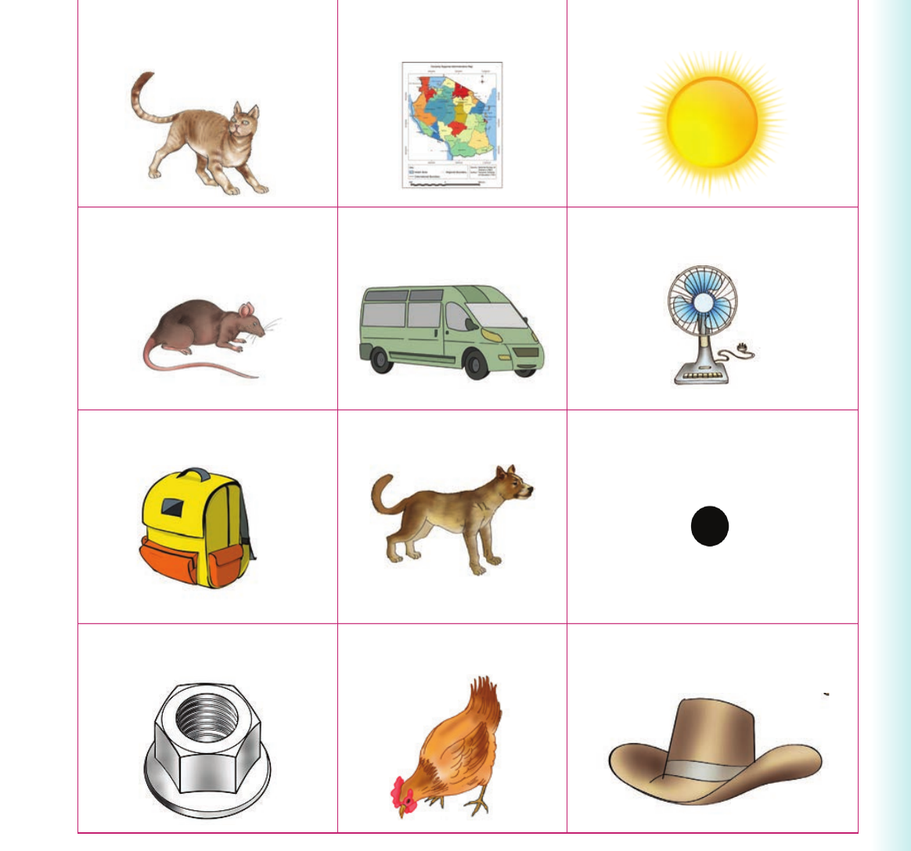

I replace initial sounds to form new words. Or I replace initial letters to sign new words
I replace initial sounds to form new words. Or I replace initial letters to sign new words.
Activity 1
1. Pronounce or sign the following words:
| rat | nap | run | fat | can | van | wag |
| log | pot | cut | cat | toy | men |
Replacing initial sounds - pictures
2. Replace the initial sounds of the words in (1). Then, pronounce the new words. Or replace the initial letters of the words in (1). Then, sign the new words.
3. Say or sign the names of the following pictures:

(a) Cat. (b) Map. (c) Sun. (d) Rat. (e) Van. (f) Fan. (g) Bag. (h) Dog. (i) Dot. (j) Nut. (k) Hen. (l) Hat.
Activity 2
1. Pronounce or sign the words box, lip, bake, book, man and toy. 2. Pronounce the first sound of each word in (1). Or finger spell the first letter of each word in (1).